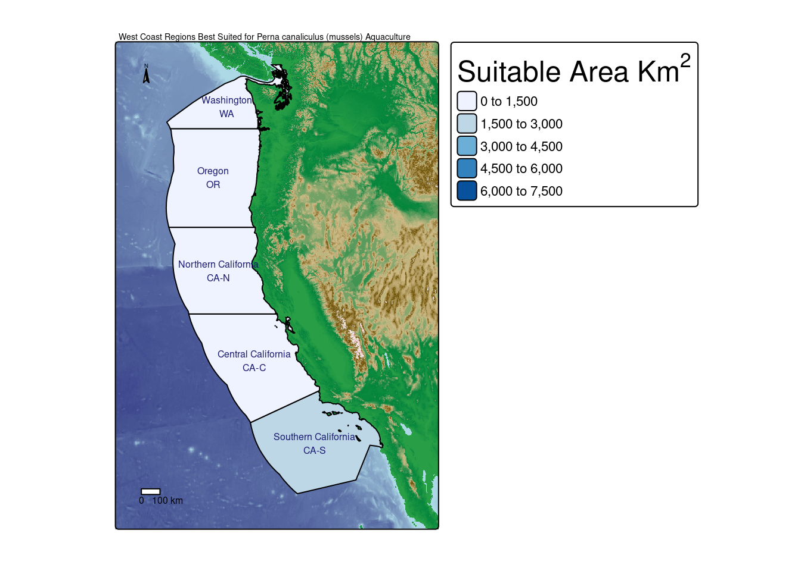

Code
library(tidyverse)
library(stars)
library(tmap)
library(sf)
library(RColorBrewer)
library(units)
library(terra)Exploring Viable Aquaculture on California Coast
library(tidyverse)
library(stars)
library(tmap)
library(sf)
library(RColorBrewer)
library(units)
library(terra)# Use rast from the terra package to read in tile h08v05 date 02/07/21, save as variable tile_8_5_07
sea_surf_temp_08 <- read_stars(here::here("data", "average_annual_sst_2008.tif"), quiet = TRUE)
sea_surf_temp_09 <- read_stars(here::here("data", "average_annual_sst_2009.tif"), quiet = TRUE)
sea_surf_temp_10 <- read_stars(here::here("data", "average_annual_sst_2010.tif"), quiet = TRUE)
sea_surf_temp_11 <- read_stars(here::here("data", "average_annual_sst_2011.tif"), quiet = TRUE)
sea_surf_temp_12 <- read_stars(here::here("data", "average_annual_sst_2012.tif"), quiet = TRUE)
bathymetry <- rast(here::here("data", "depth.tif"))
EEZ_zone <- st_read(here::here("data", "wc_regions_clean.shp"), quiet = TRUE)# Stack the SST rasters into one frame
sst_stack <- c(sea_surf_temp_08, sea_surf_temp_09, sea_surf_temp_10, sea_surf_temp_11, sea_surf_temp_12)
# Convert SST and wc_regions_clean to class rast
sst_stack <- rast(sst_stack)# Define the target CRS
target_crs <- "EPSG:4326"
# reproject to target_crs
sst_stack <- project(sst_stack, target_crs)
bathymetry <- project(bathymetry, target_crs)# Find the mean of SST
mean_sst <- mean(sst_stack, na.rm = TRUE)plot(sst_stack)plot(mean_sst)# Convert mean SST to Celsius
mean_sst_c <- mean_sst - 273.15
# Create sea breaks
sst_temp_breaks <- seq(5, 33, by = 1)
# Create the map with the reversed red color palette
water_temp_c <- tm_shape(mean_sst_c) +
tm_raster(title = "Mean Water Temp", palette = c("skyblue", "midnightblue"),
breaks = sst_temp_breaks) +
tm_title("Mean Sea Surface Temperature (2008-2012) (°C)")
water_temp_c
#bathymetry <- st_crop(bathymetry, st_bbox(mean_sst_c))
# Define breaks for land and sea
land_breaks <- seq(0, max(values(bathymetry)), by = 100)
sea_breaks <- seq(min(values(bathymetry)), 0, by = 100)
# Create color palettes for land and sea
land_palette <- colorRampPalette(c("#289e46", "#02843c", "#cfbb88" , "#6c4f01", "snow", bias = 10))(length(land_breaks) - 1)
sea_palette <- colorRampPalette(c("midnightblue", "lightblue"))(length(sea_breaks) - 1)
# Combine the palettes and breaks
all_breaks <- c(sea_breaks, land_breaks[-1]) # Combine breaks (remove 0 duplicate)
all_palette <- c(sea_palette, land_palette) # Combine palettes
# Create the map with custom breaks and palettes
land_sea <- tm_shape(bathymetry) +
tm_raster(title = "Elevation (ft)",
breaks = all_breaks,
palette = all_palette) +
tm_layout(legend.outside = TRUE,
frame = TRUE,
main.title = "West Coast Elevation and Bathymetry",
main.title.position = c(0.14, 1),
main.title.size = 1.2) +
tm_scale_bar(text.color = "#F6EAC7",
color.dark = "#665A47",
color.light = "#F6EAC7",
position = c(0.07, 0.02),
width = 0.3) +
tm_compass(type = "arrow",
size = 1.5,
position = c(0.06, 0.06),
text.color = "#F6EAC7",
color.dark = "#665A47",
color.light = "#F6EAC7")
land_seabathymetry_crop <- crop(bathymetry, mean_sst_c)bathymetry_resampled <- resample(bathymetry_crop, mean_sst_c, method = "near")# Print and check the resolution of both rasters
if (all(res(bathymetry_resampled) == res(mean_sst_c))) {
print("Resolutions match.")
} else {
print("Resolutions do not match.")
}[1] "Resolutions match."# Print and check the extents of both rasters
if (ext(bathymetry_resampled) == ext(mean_sst_c)) {
print("Extents match.")
} else {
print("Extents do not match.")
}[1] "Extents match."# Print and check the CRS of both rasters
if (crs(bathymetry_resampled) == crs(mean_sst_c)) {
print("CRS match.")
} else {
print("CRS do not match.")
}[1] "CRS match."# Make copies before reclassifying oysters
sst_oyster_c <- mean_sst_c
oyster_depth <- bathymetry_resampled
# Establish reclassification matrix for temp
temp <- matrix(c(-Inf, 11, 1,
11, 30, 0,
30, Inf, 1),
ncol = 3, byrow = TRUE)
# Reclassifying oyster_temp based on the matrix
sst_oyster_c <- classify(sst_oyster_c, rcl = temp)
# Establish reclassification matrix for depth
depth <- matrix(c(-Inf, -70, 0,
-70, 0, 1,
0, Inf, 0),
ncol = 3, byrow = TRUE)
# Reclassifying oyster_depth based on the matrix
oyster_depth <- classify(oyster_depth, rcl = depth)# Stack rasters
oyster_zones <- c(oyster_depth, sst_oyster_c)
# Find locations that have both suitable temperature and depth
suitable_locations <- lapp(oyster_zones, fun = function(x, y) { x * y })
# Set 0 values to NA
values(suitable_locations)[values(suitable_locations) == 0] <- NA
# Print the resulting raster to check
print(suitable_locations) class : SpatRaster
dimensions : 480, 408, 1 (nrow, ncol, nlyr)
resolution : 0.04165905, 0.04165905 (x, y)
extent : -131.9848, -114.9879, 29.99208, 49.98842 (xmin, xmax, ymin, ymax)
coord. ref. : lon/lat WGS 84 (EPSG:4326)
source(s) : memory
name : lyr1
min value : 1
max value : 1 # Visualize the suitable locations
plot(suitable_locations, main = "Suitable Locations for Oysters")# Transforming EEZ to the same CRS as oyster_territory
EEZ_zone <- st_transform(EEZ_zone, crs = crs(suitable_locations))
plot(EEZ_zone)# Make EEZ a raster
EEZ_raster <- rasterize(EEZ_zone, suitable_locations, field = "rgn_id")
# Finding the suitable territory within each eez
suitable_locations <- (suitable_locations * EEZ_raster)
plot(suitable_locations)# WGS 1984 has units that are in degrees for lat long. This is not useful when trying to measure area. EPSG 3395 is a World Mercator projection that has units in meters, making it useful what I need.
suitable_locations <- project(suitable_locations, "EPSG:3395")
# Finding resolution of oyster_territory cell
cell_length <- res(suitable_locations)
# Find the area of a single cell
cell_area_m <- prod(cell_length)
# Converting to square KM
cell_area_km2 <- cell_area_m / 1000000
# Getting the count of each unique value in oyster_territory_m
value_counts_oyster <- freq(suitable_locations)
# Calculating total area for each value
value_counts_oyster$area_km2_oyster <- value_counts_oyster$count * cell_area_km2
# Renaming column referring to EEZ to join the names
colnames(value_counts_oyster)[colnames(value_counts_oyster) == "value"] <- "rgn_id"
# Drop geometry
region_info <- EEZ_zone %>%
st_drop_geometry()
# Joining region_info with value_counts_oyster to add region names to the dataframe
value_counts_oyster <- region_info %>%
left_join(value_counts_oyster, by = "rgn_id") %>%
dplyr::select(-area_m2, -area_km2, -layer, -rgn_key) %>%
mutate(across(everything(), ~replace(., is.na(.), 0)))
# Join the oyster value counts to EEZ_map_label for mapping
EEZ_map_label <- EEZ_zone %>%
left_join(value_counts_oyster, by = "rgn_id")
# Creating combined map labels with region name and code
EEZ_map_label$combined_labels <- paste(EEZ_map_label$rgn.y, EEZ_map_label$rgn_key, sep = "\n")
# Making a nice kable table, nice!
kableExtra::kable(value_counts_oyster,
format = "simple",
col.names = c("Region",
"Region ID",
"Cell Count",
"Area, Km²"),
caption = "Suitable Oyster Cultivation Territory in West Coast EEZs",
align = "l",
digits = 2)| Region | Region ID | Cell Count | Area, Km² |
|---|---|---|---|
| Oregon | 1 | 181 | 5549.04 |
| Northern California | 2 | 163 | 4997.20 |
| Central California | 3 | 20 | 613.15 |
| Southern California | 4 | 0 | 0.00 |
| Washington | 5 | 336 | 10300.98 |
# Create the thematic map with a legend title
tm_shape(bathymetry) +
tm_raster(title = "Elevation (ft)",
breaks = all_breaks,
palette = all_palette,
legend.show = FALSE) + # Ensure the legend is shown
tm_shape(EEZ_map_label) +
tm_polygons(fill ="area_km2_oyster",
border.col = "black",
palette = "Blues",
title = expression("Suitable Area Km"^2*""),
breaks = c(0, 2500, 5000, 7500, 10000, 12500)) +
tm_layout(legend.title.size = 1.5,
legend.outside = TRUE) +
tm_text("combined_labels",
size = 0.5,
col = "midnightblue",
shadow = FALSE,
auto.placement = FALSE) +
tm_title_out("West Coast EEZ Regions\nBest Suited for Oyster Aquaculture",
position = c(0, 1),
size = 1.7,
color = "black",
fontface = "bold")